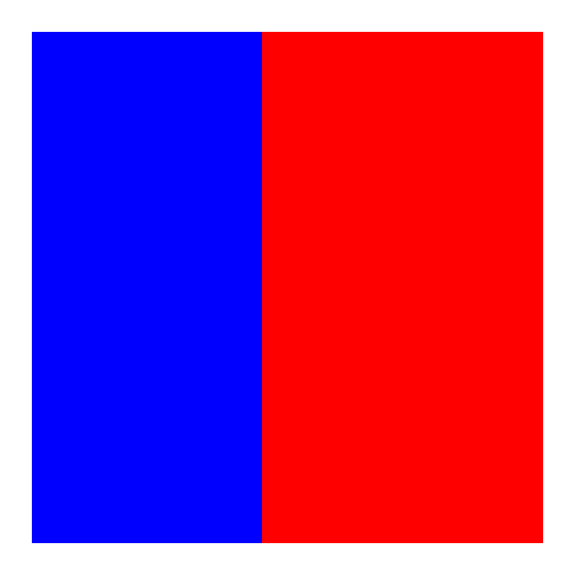
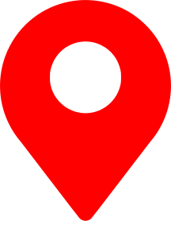
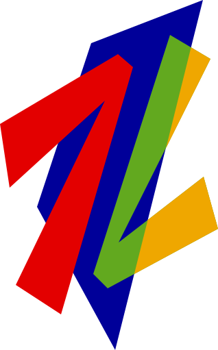

SIGNIFICADO ICONOS
| ICONO | SIGNIFICADO |
|---|---|
|  | Señal Oficial del Gobierno de Chile |
| Señal De Una Radio | |
| Señal de Video de Noticias sin Comentarios | |
| Señal de Video | |
| Señal de Video de Web Cam | |
| Informacion de Hora | |
| NUEVO | Indica que la Señal se agrego recientemente a la pagina |
| (Icono Color Naranja) Indica que la Señal de video solo transmite ocasionalmente | |
| (Icono Color Azul) Indica que la señal de video es de una pagina web externa (Solo se utiliza en Señales Nacionales) | |
| Indica que la señal de video tiene problemas de reproduccion |
SIGNIFICADO OTRAS IMAGENES
| IMAGEN | SIGNIFICADO |
|---|---|
| Señal Oficial de la Administración Nacional de Aeronáutica y el Espacio de EEUU (NASA) | |
| Señal Oficial de La Agencia Espacial Federal de Rusia (ROSCOSMOS) | |
| Señal Oficial de La Agencia Espacial Europea (ESA) | |
|  | Pagina que Muestra informacion de Ubicacion |
 |
Señal en Vivo de Facebook |
| Señal en Vivo de YouTube | |
 |
Señal de Video en Vivo mas Reciente de Twitch |
| Chat en Vivo de Twitch | |
|  | Muestra el Proyecto Early-Est creado por el Profesor Anthony Lomax |
FUENTES
| OBJETO | FUENTE | ENLACE |
|---|---|---|
| BANDERAS | Flagpedia | https://flagpedia.net/ |
| TIPOGRAFIA | "Assistant" de Google Fonts | https://fonts.google.com/ |
| MATERIAL ICONS | Google Fonts | https://fonts.google.com/ |
| REPRODUCTOR M3U8 | PlayerJS | https://playerjs.com/ |
NOTAS
- ALGUNOS ICONOS FUERON MODIFICADOSESTA ES UNA PAGINA SIN FINES DE LUCRO, NO TIENE PUBLICIDAD, NO HAY MONETIZACION.
Pagina basada en el Proyecto de Alplox,
y en el Proyecto de PotterSys
Creado por AINMcl
ﾠ
 ﾠ@AINMclㅤ
ﾠ@AINMclㅤ